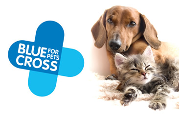

Want to adopt or volunteer?
 |
 |
 |
|---|---|---|
| The UK's leading charity. They specialise in animal rescue & furthering the welfare cause for all animals. | Also known as the National Canine Defence League, is an animal welfare charity and humane society in the United Kingdom which specialises in the well-being of dogs. | One of the animal charities in the UK who have been helping sick, injured and homeless pets since 1897. |